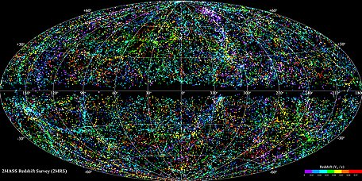

EL UNIVERSO
¿QUÉ OBJETOS ENCONTRAMOS EN LA VASTEDAD DEL UNIVERSO?
LOS PLANETAS
LAS ESTRELLAS
LAS NEBULOSAS
LAS GALAXIAS
EL TAMAÑO DEL UNIVERSO

- Unidad Astronómica (UA): equivale a la distancia media entre la
Tierra y el Sol, unos 150.000.000.000 km. Es adecuada para medir distancias dentro del Sistema Solar.
- Año luz: es la distancia que recorre la luz en un año. Resulta útil para calcular distancias entre estrellas. Por ejemplo, la segunda estrella más cercana a la Tierra (la primera es el Sol), llamada Alpha Centauri, se encuentra a 4 años luz.
EL ORIGEN DEL UNIVERSO
EL SISTEMA SOLAR
SATÉLITES
PLANETAS ENANOS
ASTEROIDES Y METEORITOS
EL SOL, NUESTRA ESTRELLA
EL NÚCLEO:
Allí se producen las reacciones termonucleares de fusión del hidrógeno para formar helio. La temperatura es de unos 15 millones de grados.LA ZONA DE CONVECCIÓN:
Allí se producen corrientes circulares de materia que sube y baja.LA ATMOSFERA SOLAR:
Formada por tres capas, la fotosfera, la cromosfera y la corona. Aquí la temperatura llega a los 6.000 ºC.MANCHAS SOLARES
PROTUBERANCIAS
Desde lo más pequeño a lo más grande, el Universo es todo lo que existe Desde el mundo invisible de las partículas que constituyen nuestros cuerpos hasta las grandes galaxias formadas por millones y millones de estrellas.
Todo lo que es, lo que ha sido y lo que será. Eso es el Universo.
Son cuerpos redondos de un tamaño muy pequeño comparado con el de las estrellas. Orbitan alrededor de una o más estrellas formando sistemas planetarios. No emiten luz.


Son grandes cúmulos de materia (mucho más grandes que cualquier planeta) que se encuentra a temperaturas elevadísimas. De hecho, en las estrellas tienen lugar millones de reacciones nucleares cada segundo, como las de las bombas atómicas de hidrógeno. Por eso brillan tanto e irradian tanto calor.
El principal componente de las estrellas es el hidrógeno. Las reacciones nucleares que en ellas se producen hacen que los átomos de hidrógeno se fusionen para formar helio, y mediante más fusiones consecutivas se forman el resto de elementos químicos que existen.
Las estrellas son los hornos en los que se forman todos los elementos que constituyen la materia. Por eso podemos decir que todos somos polvo de estrellas.
Las estrellas nacen en grandes nubes de gas interestelar esparcidas por el Cosmos: las nebulosas.
Ocupan regiones gigantescas del espacio (¡piensa que en su interior nacen millones de estrellas!) en las que la materia se encuentra dispersa con baja densidad.


Aunque las estrellas son gigantescas y están separadas las unas de las otras por distancias inimaginables, en realidad se agrupan formando galaxias.
Las galaxias son cúmulos de estrellas que giran alrededor de un centro de gravedad. Al girar adquieren formas diversas: en espiral, globular, etc.
Nuestro Sol se encuentra en la galaxia a la que hemos dado el nombre de Vía Láctea.
Las galaxias, a su vez, están separadas por distancias tan enormes que la distancia entre estrellas resulta ridícula en comparación.
Como hemos visto, el Universo es un lugar enorme. Tan grande que es imposible hacerse una idea. Pero, ¿tiene límites?. Algunos científicos creen que el Universo es infinito. Otros defienden
que es finito. Todavía no existen suficientes pruebas para decantarse a favor de una u otra opción. Pero... si es finito, ¿qué hay “más allá”?.
Evidentemente, no lo podemos saber; pero por definición sólo podemos decir que no hay nada. Únicamente dentro del Universo existen el tiempo y el espacio. Sólo seexiste dentro del Universo. “Más allá” del Universo no hay más allá, no se puede ir allí porque tal lugar no existe. No hay nada en absoluto.
En cualquier caso, el Universo es tan grande que las típicas unidades
de medida que utilizamos en la Tierra para calcular distancias (quilómetros, millas...) se nos quedan demasiado pequeñas. Por este motivo utilizamos otras más adecuadas:
Esto quiere decir que la luz del Sol tarda 8 minutos en llegar a laTierra. Por tanto, si un día el Sol cambiara de golpe de color, lo descubriríamos 8 minutos después.
Alpha Centauri es una estrella que se encuentra, como hemos dicho, a 4 años luz. Si explotara, lo sabríamos al cabo de cuatro años. Por lo tanto, cuando miramos hacia las profundidades del Universo, estamos observando el pasado. Si alguien tuviera un telescopio extremadamente potente y observara la Tierra a una distancia de 67 millones de años luz, ¡podría ver a los dinosaurios!

Aunque no estamos seguros, la teoría más aceptada sobre el origen del Universo es la teoría del Big Bang (la Gran Explosión).
Según esta teoría, en un principio todo el Universo se encontraba superconcentrado en un pequeño punto infinitamente denso y caliente. No existían ni el tiempo ni el espacio.
Entonces, por alguna razón, éste explotó y empezó a expandirse, cosa que sigue haciendo desde entonces, hace ya unos 13.000 millones de años. Con esta explosión se crearon el espacio y el tiempo, y surgieron las leyes de la Física que rigen todos los procesos del Universo.
La teoría del Big Bang está ampliamente aceptada por la comunidad científica. Las grandes discusiones se centran, sin embargo, en si el Universo seguirá expandiéndose para siempre o volverá a comprimirse de nuevo.
Se cree que eso dependerá de la cantidad de materia que contenga el Universo. Si hay suficiente como para que la gravedad frene la expansión y haga que toda la materia vuelva a reunirse en un punto, se producirá lo que denominamos Big Crunch (el Gran Colapso).
Quizá el Universo en el que vivimos no es el primero que ha existido, y ya han surgido otros en una serie de Big Bangs y Big Crunchs consecutivos por toda la eternidad...
Algunas estrellas tienen planetas orbitando a su alrededor. A eso se le denomina sistema planetario. El Sistema Solar es nuestro sistema planetario, constituido por una estrella que hemos bautizado con el nombre de “Sol” y ocho planetas que giran alrededor describiendo órbitas ligeramente elípticas. Colocados como si fuéramos a hacer una foto de familia, y ordenados según su distancia respecto al sol, los planetas del Sistema Solar son:
Alrededor de los planetas también pueden girar otros cuerpos más pequeños que denominamos satélites. La Tierra tiene un satélite al que llamamos Luna. Marte tiene dos satélites (Fobos y Deimos). Y Júpiter... ¡tiene hasta 64 satélites!
Existen otros cuerpos rocosos que también describen órbitas alrededor del Sol. El más famoso, por el hecho de que antes se le consideraba un planeta más (aunque es más pequeño que nuestra luna), es Plutón, situado a las afueras del Sistema Solar.
Desde agosto de 2006, Plutón pasó a ser considerado un planeta enano, junto con Ceres y Eris (estos dos eran considerados antes asteroides)


Los asteroides son también cuerpos rocosos que vagan por el espacio. Son demasiado pequeños como para tener la forma esférica característica de los planetas, debida a la propia gravedad: los mayores miden unos 900 km de diámetro y los de menor tamaño apenas alcanzan la medida de una piedra (estos últimos reciben el nombre de meteoroides).
Entre Marte y Júpiter existe un cinturón lleno de asteroides que orbitan alrededor del Sol. La imponente fuerza gravitatoria de Júpiter no permitió que estos fragmentos de roca se aglomerasen para formar otro planeta.
Muchos asteroides (sobre todo los pequeños, los meteroides) se escapan del cinturón orbital y se dirigen directamente hacia los planetas.
Seguro que has visto alguno entrando en la Tierra: cuando se adentran en la atmósfera a gran velocidad, la fricción con el aire provoca que se aplasten y entren en ignición, dejando un rastro brillante y efímero en el cielo nocturno: son las estrellas fugaces. Normalmente, la fricción con la atmósfera hace que se desintegren completamente antes de llegar al suelo, pero si una parte consigue llegar, entonces este fragmento rocoso recibe el nombre de meteorito.
El Sol constituye el 99,8% de la masa total del Sistema Solar. A su lado, los planetas son minúsculos. Si miráis el dibujo de la derecha podréis observar las diferencias de tamaño entre el Sol y los planetas a escala.
El diámetro del Sol es de 1,4 millones de quilómetros 110 veces el de la Tierra. ¡Sería posible meter 1,3 millones de Tierras en el espacio que ocupa el Sol!
Aproximadamente el 75% del Sol es hidrógeno, que constituye el combustible de las reacciones nucleares de fusión que hacen que brille e irradie calor.
Estas reacciones nucleares de fusión hacen que el hidrógeno se convierta en helio, que es el segundo componente más importante del Sol. También encontramos carbono y hierro en pequeñas cantidades.
¿Qué pasará cuando al Sol se le acabe el hidrógeno? El Sol, como todas las demás estrellas, sigue un ciclo vital que depende de su tamaño. Se calcula que el Sol agotará su hidrógeno en unos 4.500 millones de años y entonces se inflará y se tragará a Mercurio, Venus y la Tierra. Se habrá convertido en una gigante roja.
En el Sol encontramos tres partes bien diferenciadas:
Son zonas algo menos calientes que el resto de la superficie (se encuentran a unos 2.000 ºC). Algunas son mucho más grandes que la Tierra. Aparecen de forma periódica y se van desplazando.
A menudo se producen erupciones inmensas que lanzan rayos de materia incandescente hacia el cielo, la cual vuelve a caer, formando un arco. Son tan grandes que la Tierra, a su lado (mirad el dibujo en el que la hemos puesto a escala) parece ridícula.